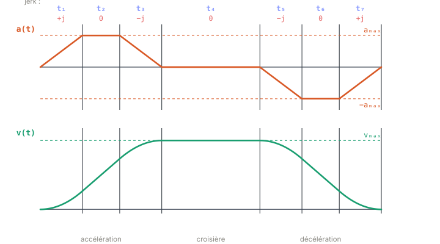

Chapitre 03
Anatomie du profil à 7 segments
Objectifs du chapitre
- Décomposer un profil limité en jerk en ses 7 phases et lire le motif des signes de jerk (« UDDU »).
- Distinguer les deux saturations : le plateau d'accélération (aₘₐₓ) et le plateau de vitesse (vₘₐₓ).
- Comprendre quand certaines phases disparaissent, et pourquoi le profil est C² (continuité de p, v, a).
1. Les sept phases et le motif du jerk
Au chapitre précédent, nous avons vu qu'un mouvement borné en jerk se construit à partir de créneaux de jerk. Dans le cas général — départ et arrivée à l'arrêt — le mouvement complet se compose de sept segments de durées t₁, t₂, …, t₇. Sur chaque segment, le jerk est constant et vaut l'une de trois valeurs seulement : +jₘₐₓ, 0, ou −jₘₐₓ. La figure ci-dessous les annote tous.

Le signe du jerk suit toujours le même enchaînement :
C'est le motif « UDDU » (Up-Down-Down-Up), qui décrit la façon dont l'accélération monte puis redescend : elle croît (+j), plafonne (0), redescend vers zéro (−j) ; on traverse la croisière ; puis elle décroît sous zéro (−j), plafonne à −aₘₐₓ (0), et remonte vers zéro (+j).
Ne mémorisez pas sept segments : mémorisez un trapèze d'accélération. Ses trois pentes montantes/plates/descendantes, répétées à l'envers pour freiner, donnent naturellement les sept phases. Le jerk n'est que la pente de ce trapèze.
2. Trois blocs : accélérer, croiser, décélérer
Les sept phases se regroupent en trois blocs lisibles sur la figure 3.1 :
- Phases 1–3 — accélération. t₁ : le jerk est +jₘₐₓ, l'accélération monte de 0 à aₘₐₓ. t₂ : jerk nul, l'accélération reste au plateau aₘₐₓ. t₃ : jerk −jₘₐₓ, l'accélération redescend à 0. À la fin de ce bloc, la vitesse a atteint son maximum.
- Phase 4 — croisière. Jerk nul, accélération nulle : la vitesse reste constante à vₘₐₓ. C'est le seul segment où l'on avance « à régime établi ».
- Phases 5–7 — décélération. Image miroir du premier bloc : t₅ fait plonger l'accélération sous zéro (−j), t₆ la maintient à −aₘₐₓ, t₇ la ramène à zéro (+j) pile à l'arrivée.
3. Deux saturations, deux plateaux
Un profil complet fait apparaître deux limites qui se traduisent chacune par un plateau visible sur les courbes.
Le plateau d'accélération correspond aux segments t₂ et t₆ : l'accélération y est bloquée à ±aₘₐₓ, le jerk est nul. Le plateau de vitesse correspond au segment t₄ : la vitesse y plafonne à vₘₐₓ, accélération nulle. Le lien entre les deux passe par la durée des créneaux de jerk.
Pendant une phase de jerk constant de durée t_j, l'accélération varie linéairement de jₘₐₓ · t_j. Si le plateau d'accélération est atteint, c'est que la phase de montée a duré assez longtemps pour saturer :
t₁ (et t₃, t₅, t₇) valent donc au moins aₘₐₓ / jₘₐₓ dès que aₘₐₓ est réellement atteinte.
Sur automate, ces durées sont figées à la conception du profil, jamais recalculées dans la boucle temps réel. À chaque cycle, on ne fait qu'évaluer le profil déjà planifié — voir l'encart ruckig-scl plus bas.
4. Quand des phases s'annulent
Les sept phases ne sont pas toujours présentes. Selon la distance à parcourir, certaines durées tombent à zéro.
- Déplacement court → pas de croisière. Si la distance ne permet pas d'atteindre vₘₐₓ, la vitesse n'a pas le temps de plafonner : t₄ = 0. On accélère puis on décélère immédiatement, sans palier de vitesse.
- Déplacement encore plus court → plateaux d'accél nuls. Si l'on n'atteint même plus aₘₐₓ, les paliers d'accélération disparaissent : t₂ = t₆ = 0. Le trapèze d'accélération devient un simple triangle : montée puis descente immédiate du jerk.
Ces disparitions ne sont pas des cas pathologiques : ce sont les différentes familles de profil que le planificateur doit reconnaître et calculer. Nous les étudierons systématiquement au chapitre 4.
Une durée nulle ne veut pas dire « segment absent » dans le code : le segment existe toujours, avec t = 0. Les formules d'intégration restent valides sans branchement particulier — c'est ce qui rend l'évaluation robuste.
5. Un profil de classe C²
Comme le jerk est fini partout, l'accélération est continue (elle est l'intégrale d'un signal borné), la vitesse l'est aussi, et la position également. Le profil est donc C² : position, vitesse et accélération sont toutes continues. Seul le jerk est discontinu — il saute entre +jₘₐₓ, 0 et −jₘₐₓ aux frontières de segments — mais il reste borné.
La continuité C² compte pour l'asservissement : une accélération continue signifie un couple/effort continu côté actionneur. Pas de à-coup instantané, moins d'excitation des modes mécaniques, moins d'usure et de bruit. C'est tout l'intérêt de limiter le jerk plutôt que l'accélération seule.
6. Durée totale du mouvement
La durée totale est simplement la somme des sept segments :
Cette valeur sert de référence pour la synchronisation multi-axes (chapitre 5) : tous les axes visent une même t_f.
Dans ruckig-scl, un profil est stocké dans l'UDT typeProfile, qui contient le tableau des durées t[] des 7 segments et le jerk j[] appliqué sur chacun. La fonction StateAtTime évalue le triplet (p, v, a) à un instant donné en intégrant les segments jusqu'à cet instant, tandis que IntegrateProfileStates remplit les états intermédiaires du profil.
// SCL — durée totale d'un profil
tf := 0.0;
FOR i := 0 TO 6 DO
tf := tf + prof.t[i];
END_FOR;Récapitulatif
- Un profil borné en jerk complet a 7 segments ; le jerk suit le motif UDDU : +j, 0, −j, 0, −j, 0, +j.
- Trois blocs : accélération (1–3), croisière à v constante (4), décélération symétrique (5–7).
- Deux saturations : plateau d'accélération (t₂, t₆ à ±aₘₐₓ) et plateau de vitesse (t₄ à vₘₐₓ). Sur une phase de jerk, Δa = jₘₐₓ · t_j.
- Trajet court → t₄ = 0 ; plus court → t₂ = t₆ = 0 (accélération triangulaire) : ce sont les familles du chapitre 4.
- Profil C² (p, v, a continues), jerk discontinu mais borné : couple continu à l'actionneur.
- Dans ruckig-scl :
typeProfile(t[], j[]) ;StateAtTimepour évaluer (p, v, a).